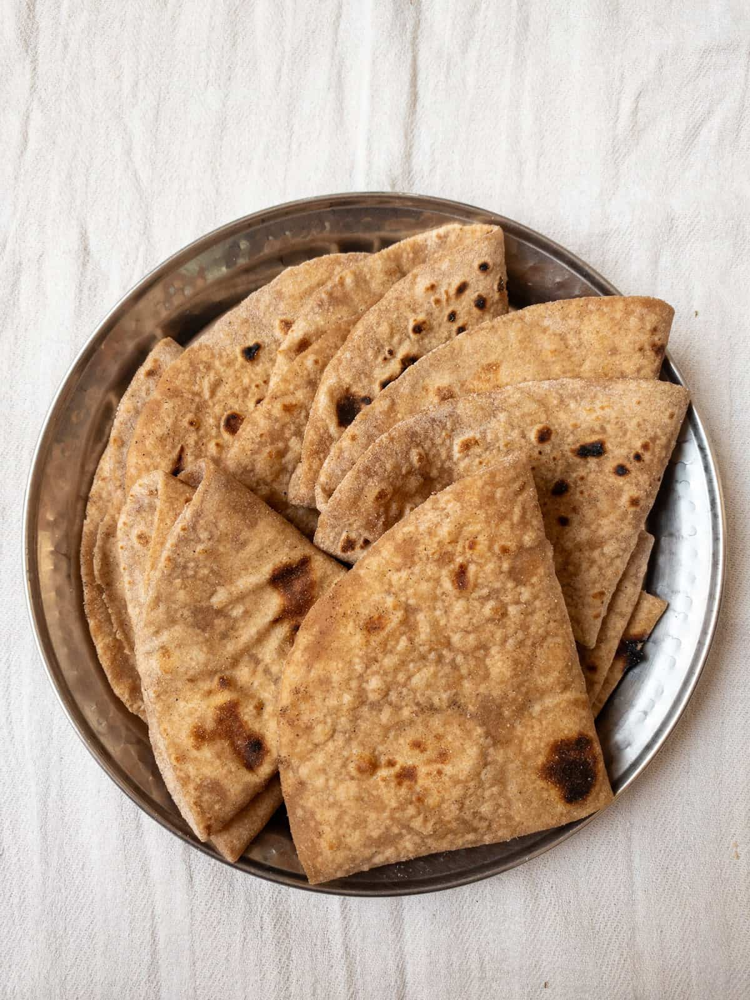

Home
Chapati Recipe

Description
Chapati is an unleavened flatbread originating from the Indian subcontinent.
Chapatis are made of whole-wheat flour known as atta, mixed into dough with water,
and cooked on an iron griddle known as a tava, puffing up over direct heat.
Ingredients
- Flour
Steps
- Add 3-4 cups (usually wheat-based)
- Oil
Steps
- the dough and for pan-frying (approx. 1/4 to 1/2 cup total).
- water (often warm)
Steps
- 1 to 2 cups (sufficient to make a soft dough).
- Sugar
Steps
- 1-3 tablespoons (provides flavor and aids browning).
- Salt
Steps
- 1 teaspoon to 1 tablespoon